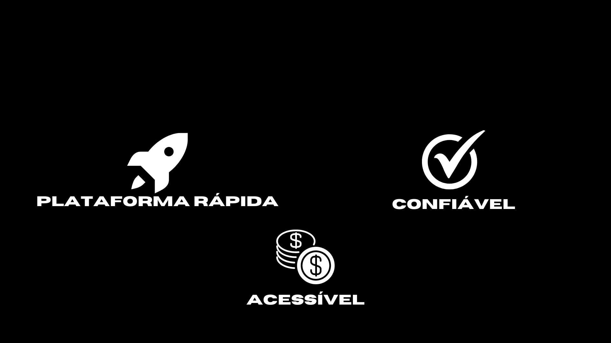

Homepage - Catálago - Carrinho - Conta

Bem-vindo ao YouFood, a sua nova plataforma de marketplace de lanches, criada para revolucionar a forma como você pede e desfruta das suas comidas favoritas! Nossa missão é conectar você aos melhores restaurantes, lanchonetes e food trucks locais, oferecendo uma experiência gastronômica diversificada, prática e segura. O que é o YouFood? O YouFood é uma plataforma online onde você pode explorar, selecionar e pedir lanches variados diretamente de diversos estabelecimentos da sua região. Com uma interface amigável e intuitiva, a nossa plataforma permite que você encontre desde os clássicos da culinária brasileira até opções internacionais, tudo em um só lugar.